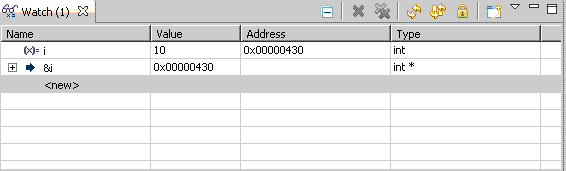
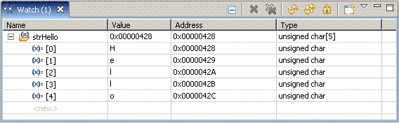

7.9.1.23. Using Symbols as Expressions¶
A symbol name can be specified as an expression in the Watch window. If a symbol is defined in a C or C++ source file (and the object file contains symbolic debugging information), the symbol is treated as a variable representing the contents of memory at the specified address.
The Watch window accepts standard C notation. To view the value of a symbol, simply specify the symbol name. Preceding the symbol name with an ampersand displays the address of the symbol’s location in memory.

Similarly, specify the symbol name to view the value of a symbol that defines a character string. The Watch window displays the address of the first character of the string. Expand the expression to view the contents of each element of the array.

Symbolic Debugging Information
The Code Composer Studio IDE treats symbols differently depending on whether or not the object file contains symbolic debugging information.
By default, symbolic debugging information (-g) is specified when building C/C++ source files. The symbols defined in the source files are treated as described in To Use Symbols as Expressions.
Without symbolic debugging information, all symbols are treated as addresses.
For example, when using a symbol name to specify an expression in the Watch window:
- If symbolic debugging information is available, the value at the memory location represented by the symbol name (variable) is displayed in the Watch window.
- If symbolic debugging information is not available, the Watch window can only indicate that a label exists at a certain address. The symbol’s address is displayed in the Watch window. To display the value at the memory location represented by the symbol, it is necessary to prepend the symbol name with an asterisk (*).
Note: For actual or simulated target memory configurations that support multiple pages (Program, Data, and I/O), you can specify a particular page by using the @ symbol. After the memory address, enter the @ symbol followed by the keyword for the appropriate page:
| Keyword | Type of Memory |
|---|---|
| prog | Program |
| data | Data |
| io | I/O |
| data_byte | Data bytes |
___
Example:
*(int*)0x1000@prog
*(int*)0x1000@data
Or
Ox1000@DATA
Ox1000@IO
Ox1000@DATA_BYTE
Ox1000@PROG
These expressions can be used in the Watch window, or wherever GEL expressions can be used.
___
See also: